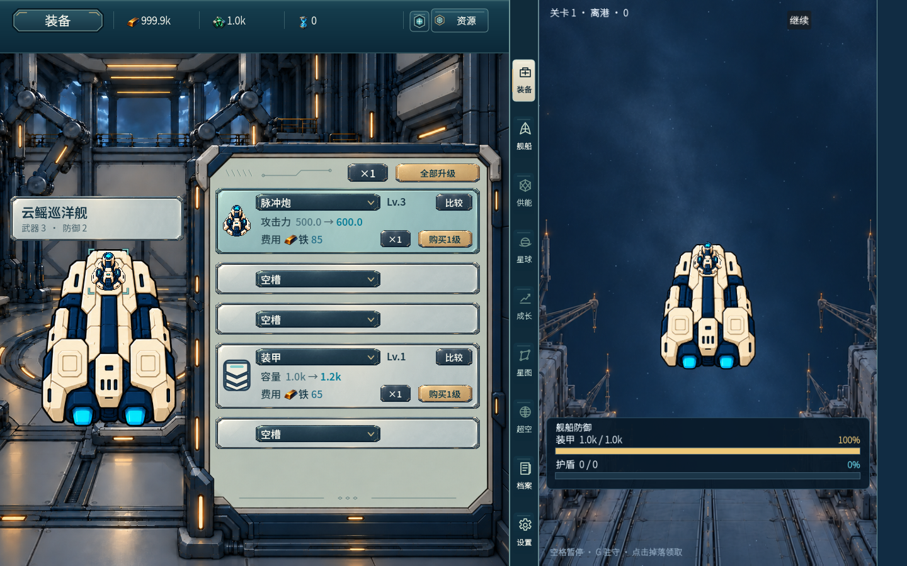
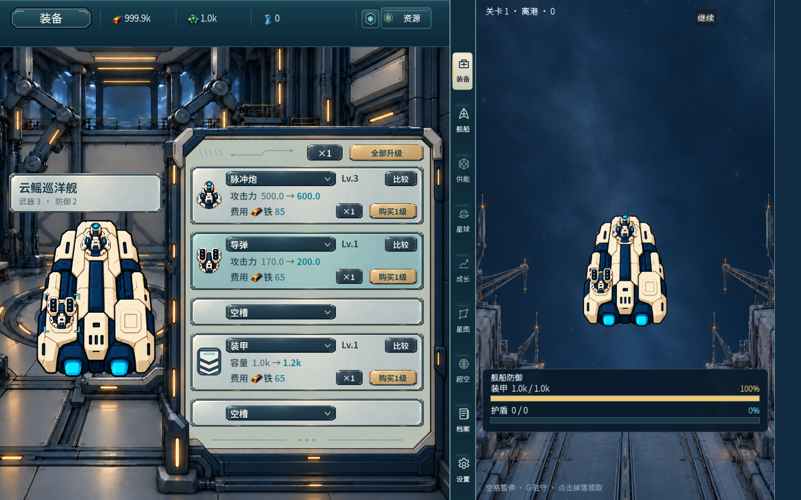
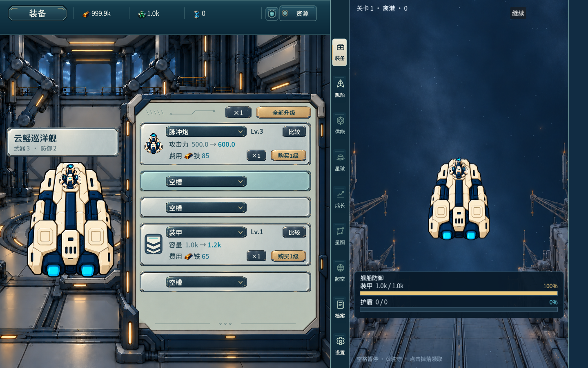
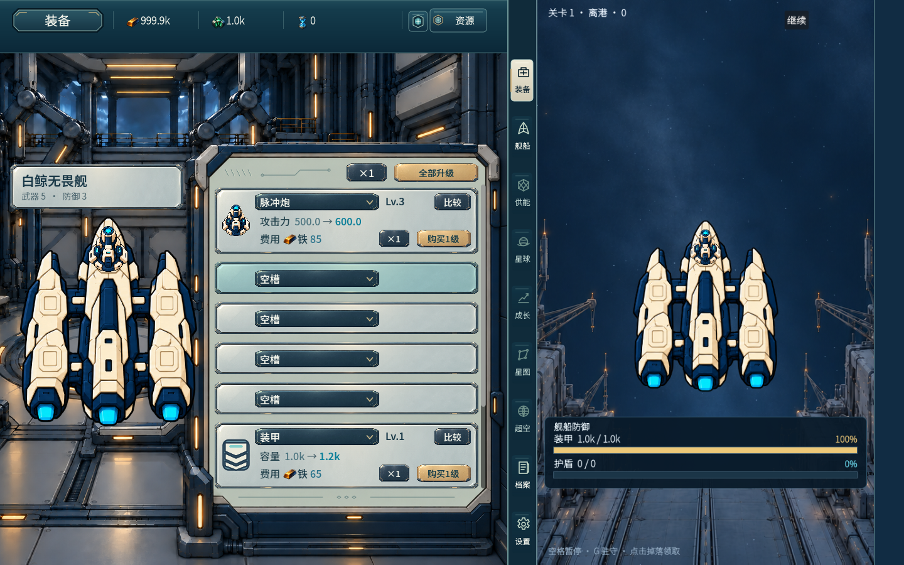
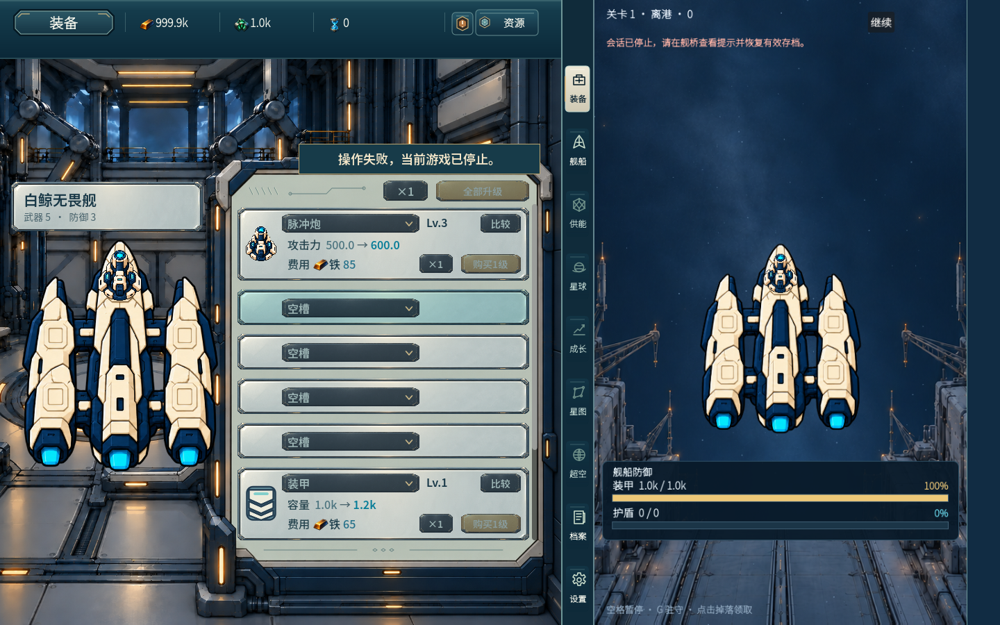

用户已明确授权“空槽的时候上下等间距，完成后合入main，装备这轮就完事了”。最终空槽可见内面净空8/8，安装卡y10不变；根与既有原独审已快速确认四图/原像素及空实切位置，声明的47范围已读，不冒称根逐对象核闭包。作者在本地逐项核实际47 diff和每个文件内容/源哈希后完成本轮授权装备合入。
main实际固定e845ca58afd39184c3d4c5743021480e393adf74，唯一父原main e3b38d7b6d8256f6031e1b086c7db7812b6a441f；合前两次fresh fetch未前进，普通push成功，fresh fetch回读相同完整SHA，无force。
实际范围47件：9脚本（main、Equipment/Economy/resource_amounts、equipment_panel/bridge_theme/player_text/resource_visuals/zone_shell）+38消费资产（33公共SVG、5装备/资源PNG）。GameSession、native、config、其它模块源、历史/诊断/个人数据/import/uid不在diff；未整条合混合art分支。共享脚本是已审装备运行的必要公共依赖，不代表其它模块或全局整数/跨模块验收完成。
保留原art工作区/分支，未checkout/clone/worktree/reset/clean。alternate-index以原main构造仅47路径的提交树；实际运行前核47与工作区字节相同、活跃代码差异0、72条资源引用存在且同字节。运行真实main.tscn/main/native/config入口，并将143项实际缓存项目资源逐项核属于该main提交且SHA256相同，避免用额外art文件冒充闭包。生成配置/外部同环境native另记哈希，未放Git。
主入口Godot4.7.2 check-only exit0，必要受影响实际入口0失败：全局循环只报价、真实不足可点短提示与Owner不变、真实购级扣费等于Owner报价且不重建结构/native配置、空槽UI免费安装/Owner返回空、空槽光学位置/混合状态、未知失败仅玩家文案且冻结支付/禁用比较与直调护栏。unknown显式publisher注入，不是实际native故障；钱包/进度受控，不作自然解锁证明。五张main绑定完整原图逐张亲看。未新录无关视频、未重测性能，8fe99性能不称此main重测。
该授权范围的装备本轮完成；不是其它模块/全游戏/main整体质量终审通过。证据只放独立归档分支，不进入main。
远端回读 · 实际47/143资源核对 · 实际文件范围




